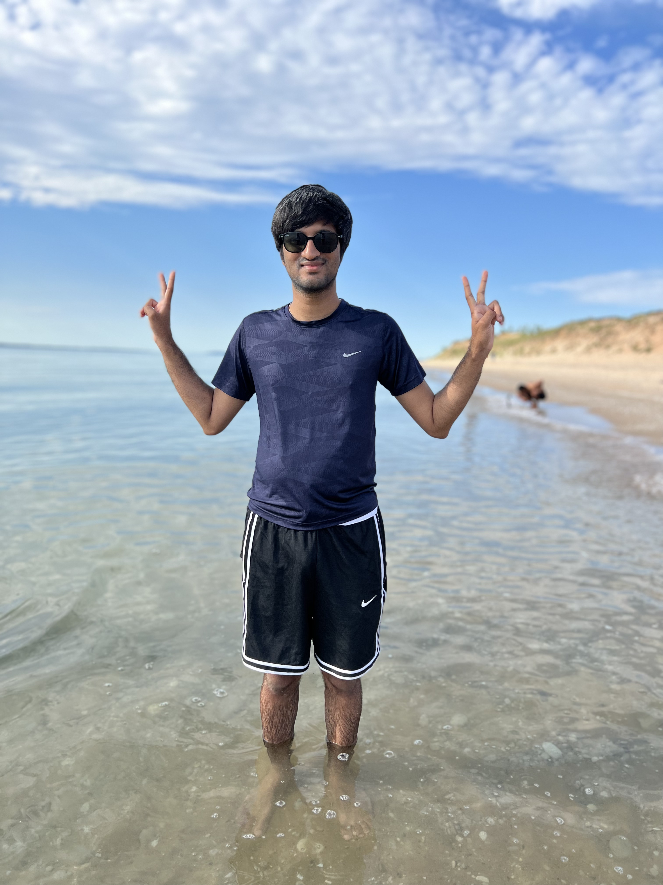
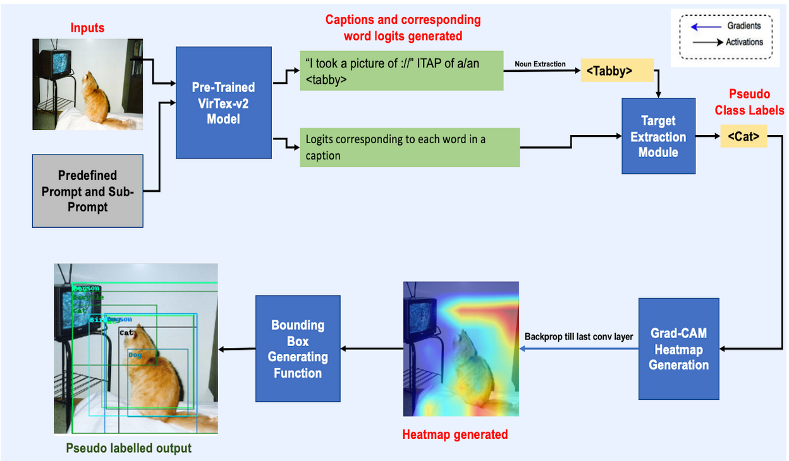
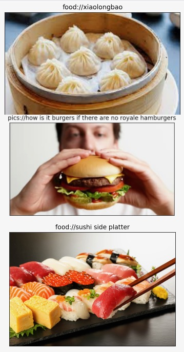
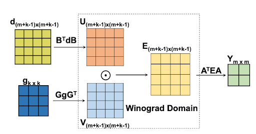

|
Hi! I am an Master's graduate in Electrical Engineering and Computer Science from University of Michigan Ann Arbor, where I specialized in Signal, Image Processing, and Machine Learning. I am passionate about leveraging cutting-edge technology to create a meaningful and positive impact on the world. I obtained my undergraduate degree in Electronics and Communication Engineering, complemented by a minor in Computer Science, from PES University in 2020. My educational background, combined with my courses at the University of Michigan, have helped me develop a strong foundation in computer vision and machine learning. If you have a similar passion for technology and innovation, I'd love to connect with you. Whether we explore potential research collaborations or simply engage in insightful conversations about the latest advancements in our field, feel free to get in touch with me. Feel free to say hi at : kemmannu at umich dot edu |
 |
|
|
{kind=link}
|
I'm broadly interested in intersection Computer Vision, Deep Learning and NLP. I am particularly interested in exploring self-supervised representational learning methods, utilizing multi-modal pretraining, especially language supervised pretraining, to address challenging vision tasks such as classification and detection. Developing a novel training recipe for open vocabulary instance segmentation without the need for aligned data, inspired by the distinct ”what” and ”where” pathways observed in the human visual system (working towards submission for ICLR 2024) |
|
Sunnyvale, CA , Manager:Prasad Shamain Conducted research, collaboration, and implementation of a privacy-focused Deep Learning solution for a complex problem involving radar inputs for a specific Amazon product Designed and implemented a Computer Vision Ground Truth system, Data-Collection pipeline, and synchronization, while exploring different deep learning methods for a Radar Based System, considering resource constraints and providing key insights for decision-making |
|
Here are some of the projects that I have been working on :-) |
|  |
EECS 545 Course Project , Supervisor :Honglak Lee Report / Poster Our novel proposed method drastically reduces the need of human supervision required for training an Object Detector. Leveraged a language supervised pre-trained bi-directional captioning model (VirTex-v2) that outputs set of diverse captions given an image. Further, zero-shot transfered using prompt engineering and then filtered using noun and target extraction modules to get a set of "words of interest" from the generated captions. Using these "words of interest", utilized Gradient Class Activation Maps to localize an object given an image and draw a bounding box around it. Thus, creating a pseudo label and pseudo bounding boxes that act as supervision to train the Object Detector. Finally, trained a Fully Convolution Single Stage Object Detector (FCOS) using new small modified verison of GioU loss to account for the noise in the generated pseudo bounding boxes. We verify our techniques on Pascal-VOC dataset. |
|  |
EECS 598 Course Mini-Project , Supervisor :Justin Johnson Report Subsampled RedCaps dataset from sub-reddits pertinent to food. Our dataset is unique and contains image-caption pairs from manually curated food related sub-reddits from 04/2020 - 04/2022. Pre-trained a bi-directional image captioning model using RegNeX-800MF as feature extractor for image and 2 encoder-decoder transformer layer to learn semantic representations from the captions using our subsampled dataset. With limited hardware resources, our best model acheived 20 % zero shot accuracy on the test-set of Food-101 dataset. |
|  |
EECS 598 Course Project , Supervisor :Hun-Seok Kim Report Developed a 8-bit Quantized Flexible Winograd based Convolutional Engine in verilog for decreased inference time and model size. Simulated the entire inference cycle of a CNN in MATLAB Investigated and implemented various Quantization techniques used in tinyML to reduce the model complexity. |